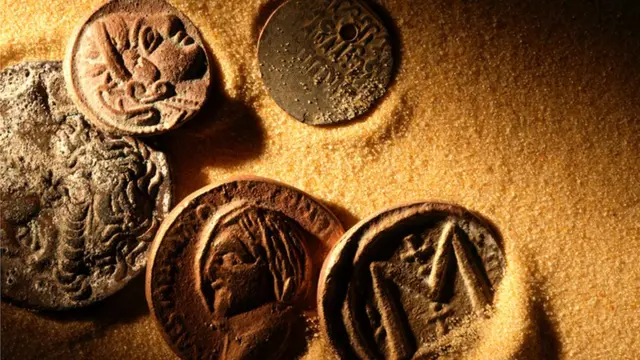

A Fascinante História da Numismática
Numismática é a ciência que estuda moedas, cédulas, medalhas e outros itens monetários, sendo tanto um campo acadêmico quanto um hobby popular. Sua origem remonta aos primórdios da civilização, quando objetos de valor intrínseco, como conchas e metais preciosos, começaram a ser usados como meio de troca.
Os primeiros registros de moedas, feitas de eletro (uma liga natural de ouro e prata), surgiram no reino da Lídia, na atual Turquia, por volta de 600 a.C. Essas moedas, com marcas distintivas para autenticação, revolucionaram as economias antigas ao fornecerem um meio padronizado de comércio. A adoção de moedas pelos gregos e romanos não apenas facilitou o comércio, mas também permitiu a disseminação de culturas e ideias.
Na antiguidade clássica, o Império Romano destacou-se por sua produção monetária. Moedas romanas, como o denário, frequentemente exibiam a efígie de imperadores e símbolos de poder, servindo tanto como propaganda política quanto como registro histórico. Essas moedas eram amplamente aceitas em todo o vasto território imperial, conectando economias locais a um sistema centralizado.
Com o declínio do Império Romano, a Idade Média trouxe mudanças significativas na cunhagem. Reinos fragmentados e cidades-estado começaram a emitir suas próprias moedas, muitas vezes com símbolos religiosos e heráldicos. Essas moedas refletem as complexas relações políticas e econômicas da época, sendo hoje um campo de grande interesse para historiadores e colecionadores.
No período moderno, os avanços tecnológicos permitiram a produção em larga escala de moedas com designs intrincados e medidas de segurança. Ao mesmo tempo, o colecionismo numismático ganhou popularidade, com catálogos detalhados e sociedades dedicadas à preservação da história monetária.
A numismática não é apenas o estudo de objetos monetários, mas também uma janela para a evolução cultural, política e econômica da humanidade. Cada moeda carrega consigo uma narrativa única, representando o contexto social de seu tempo. Por isso, a numismática continua a atrair estudiosos e entusiastas, fascinados pela rica história gravada em metal.